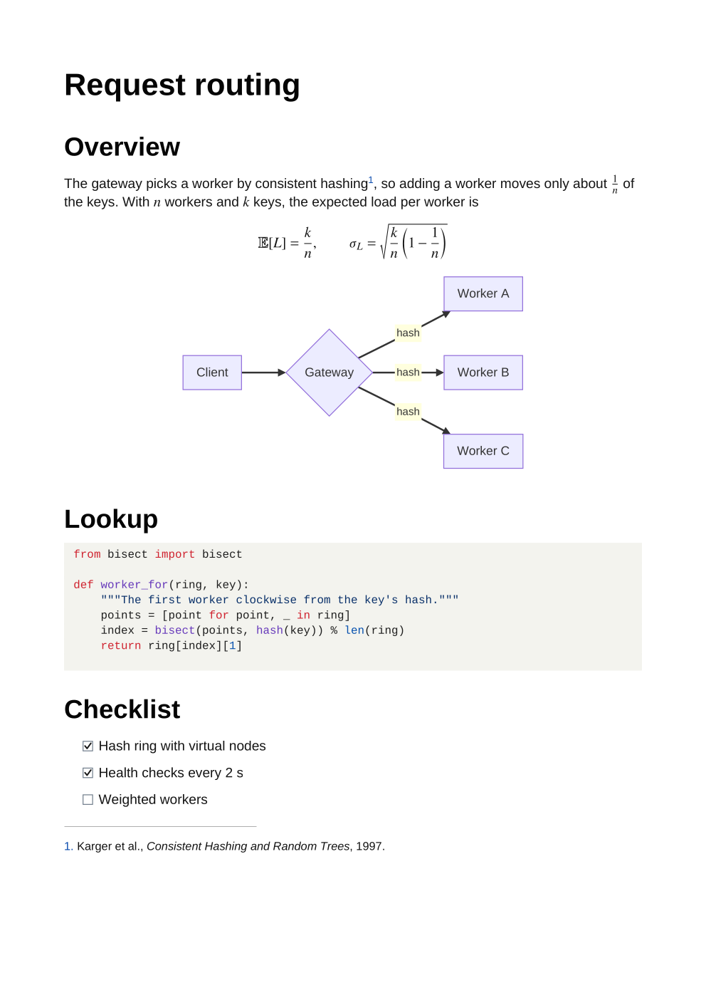
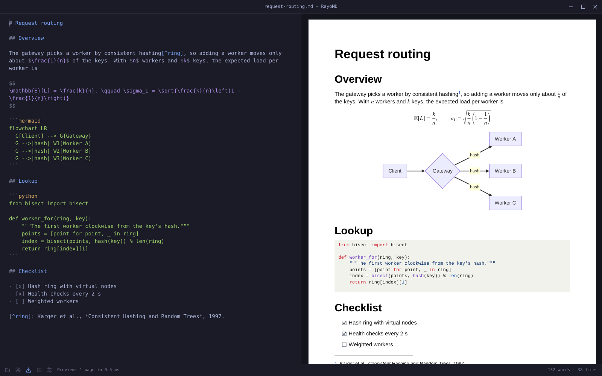

CI documentation
Turn release notes, manuals, and whole folders of repository Markdown into reproducible build artifacts, on up to 64 threads.
rayomd --batch docs pdf-out --recursive --skip-unchanged
Open source · Apache-2.0 · RayoMD 5.2.5 · GUI 1.4.0
Markdown to PDF in milliseconds.
A single small executable for Linux and Windows, and a desktop app that shows the real PDF as you type. No browser, no LaTeX, no Pandoc, no runtime.
rayomd --export report.md report.pdf
RayoMD 5.2.5 on tester.md, AMD Ryzen 5 PRO 4650GE, measured on 2026-10-20. Against other tools
The native path
RayoMD parses Markdown and writes PDF bytes directly, in its own C++17 code. It typesets formulas, colours code and draws diagrams itself: nothing starts a browser, a TeX installation, or Pandoc.
# Report
C++17
%PDF-1.7
Real output
Every preview below was exported by RayoMD 5.2.5. Open the Markdown, the generated PDF, and the exact command used.

Generated sample
Typeset formulas, a Mermaid flowchart, Python coloured as on GitHub, a task list, and a footnote.
rayomd --export technical-note.md technical-note.pdf native modern normal
RayoMD GUI 1.4.0
The desktop app draws the PDF RayoMD just built, with its own renderer, as you type: not an imitation of it. The Markdown shows in your theme's colours; on Omarchy the app follows the theme as it changes.

tester.mdFocused workloads
Turn release notes, manuals, and whole folders of repository Markdown into reproducible build artifacts, on up to 64 threads.
rayomd --batch docs pdf-out --recursive --skip-unchanged
Convert Markdown from backend jobs or AI pipelines without maintaining a browser pool. A running process exports each further document in 0.16 ms.
cat report.md | rayomd --stdin report.pdf
One PDF from an mdBook or GitBook SUMMARY.md, a folder, or an Obsidian note and the notes it links to, with one table of contents.
rayomd --book SUMMARY.md book.pdf --toc --page-numbers
Keep conversion offline and link the C++ exporter into your own application, as RayoMD GUI does.
#include "rayomd/tiny_pdf.h"
Deliberate scope
RayoMD renders a Markdown subset, not every document format. Unsupported input degrades to readable output instead of failing the export.
Dated and reproducible
Each tool converts the same document, tester.md without images, as a fresh process: start, parse, layout, write, exit. The other tools render more, and render it differently.
| Tool | Version | Time | Against RayoMD | Peak memory |
|---|---|---|---|---|
| RayoMD | 5.2.5 | 1.34 ms | 1x | 3.4 MiB |
| glu | 0.0.46 | 55 ms | 41x | 33 MiB |
| Qt 6 QTextDocument | 6.12.0 | 71 ms | 53x | 39 MiB |
| Pandoc + Typst | 3.11, Typst 0.15.1 | 357 ms | 266x | 239 MiB |
| Pandoc + WeasyPrint | 3.11, 70.0 | 987 ms | 737x | 241 MiB |
| md-to-pdf | 5.2.5, Chromium 154 | 1,821 ms | 1,359x | 205 MiB |
| Pandoc + XeLaTeX | 3.11, TeX Live 2026 | 2,147 ms | 1,602x | 340 MiB |
Optional reversible profile
RayoMD can attach the original UTF-8 Markdown to its PDF in the rayomd-source/1 profile, check its length and SHA-256 integrity, and recover it byte for byte later.
rayomd --export report.md archive.pdf --embed-source
rayomd --inspect-source archive.pdf
rayomd --recover-source archive.pdf recovered.md
Choose the deployment
Download the command-line tool for Linux or Windows, the desktop app, or link the C++ exporter into your own program, all under Apache-2.0. The default Linux build needs only libc; a curl build fetches URL images.
Share your volume, workflow, and one blocking requirement. The beta will be built around verified workloads.